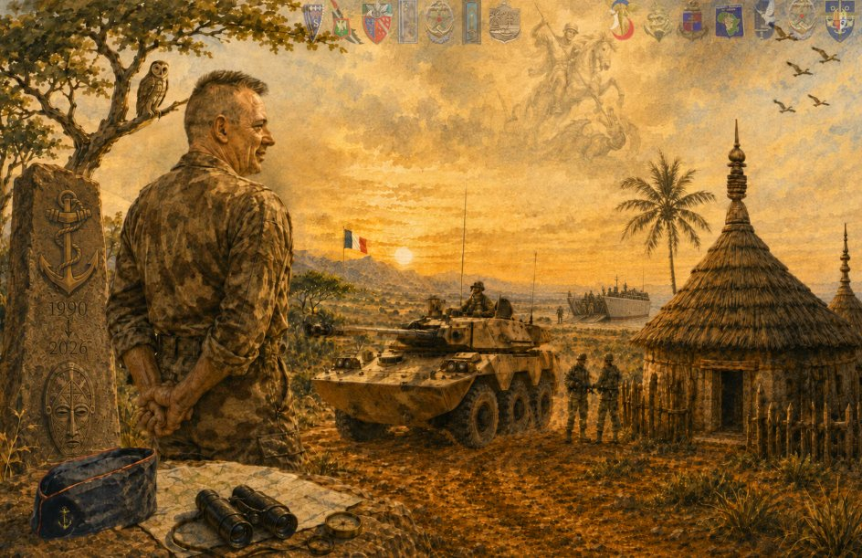

Livre d'or numérique
Adieu aux armes
du lieutenant-colonel Christophe Masse
Délégué militaire départemental adjoint de Tarn-et-Garonne
Mi-septembre 2026
Mesdames, Messieurs, en vos titres, grades, fonctions et qualités.
Le lieutenant-colonel Christophe Masse, délégué militaire départemental adjoint de Tarn-et-Garonne, quittera ses fonctions et le service actif à la fin du mois de septembre. Ayant eu l'occasion de travailler avec lui, de près ou de loin, au cours de ces dernières années, vous êtes nombreux à avoir pu apprécier son engagement, sa disponibilité et son sens du service.
Une cagnotte collective
Nous souhaitons lui témoigner collectivement notre reconnaissance et notre amitié après ces années d'engagement. Une cagnotte est ouverte afin de lui offrir plusieurs souvenirs marquants de cette étape importante : une montre, un cadre retraçant les grandes étapes de sa carrière, ainsi qu'une participation à l'achat d'équipements pour son futur chemin de Saint-Jacques.
Celles et ceux qui le souhaitent peuvent s'associer librement à cette attention, selon leurs possibilités :
- En ligne onparticipe.fr/c/kaeltEWi
- Par virement RIB disponible sur simple demande auprès du CNE de Riberolles
- Par WERO 06 89 16 69 96
- Par chèque à l'ordre de SYNERGIE DMD 82, à déposer ou à envoyer à la DMD 82
Merci à toutes et à tous pour votre contribution à ce geste collectif, qui permettra de lui offrir un témoignage à la hauteur de l'estime que nous lui portons.
En complément, nous souhaitons constituer un livre d'or rassemblant les messages de celles et ceux qui ont croisé ou accompagné le LCL Masse au cours de sa carrière. Vous pouvez transmettre ci-dessous quelques lignes lui étant destinées : un souvenir, une qualité qui vous a marqué, un moment partagé, ou simplement un mot d'amitié et de reconnaissance — avant la mi-septembre si possible. Ces messages seront compilés et lui seront remis à l'occasion de son départ.
Une question, ou vous préférez transmettre votre message par e-mail ? Écrivez à theobald.de-riberolles@def.gouv.fr.